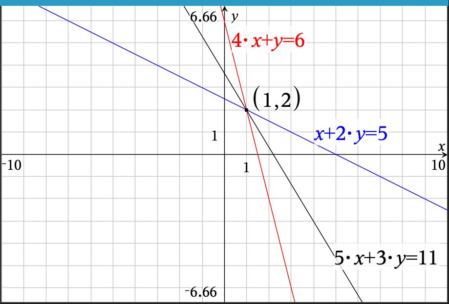

In this section we will explore processes surrounding solving systems of linear equations. In the last section, we ended by experimenting with various scalars to determine if a set of vectors were linearly independent. Mostly we used trial and error or tried to reduce the linear combinations by chosing a value for one of the scalars and then working backwards to find the remaining scalars. This was a time-consuming process and can often be challenging if there is a unique solution. In this section, we will try a more systematic approach that will help us find the desired scalars more efficiently.
As we ended section 2.1, we wanted to establish whether or not a set of vectors was linealry independent. To do this, we needed to determine whether or not we could find a set of scalar values that would give us a linear combination for other vectors in the set. In addition, we sought to determine the if a vector was in the Span of a set of vectors. For both of these questions, we ultimately want to solve for specific scalars that would meet our desired requirements.
While this process of finding scalars may seem new, it is actually not a new idea. Recall that in high school we solved systems of equations using a variety of techniques including substitution, elimination, and graphing. As the number of variables and equations increased, the techniques of substitution and graphing became very challenging. The process of elimination was generally easier as the number of variables increased and so this process is the one we will refine here.
You may recall that there were certain operations we could perform on equations so that their solution sets did not change. These included multiplying an equation by a nonzero constant, adding equals to equals, and rearranging the equations. For example, since, say, \(5=5\text{,}\) we can also say that \(2\cdot5=2\cdot5\text{.}\) Similarly for an equation like \(x+2y=5\) (for which a solution is clearly \(x=1\) and \(y=2\)), then if we multiply both sides by, say 3, we get \(3\left(x+2y=5\right) \Rightarrow 3x+6y=3\cdot5\Rightarrow 3x+6y=15\text{.}\) Just as \(x=1\) and \(y=2\) is a solution to the original equation, due to the fact that multiplying both sides of an equation by the same value gives a new equation that is also true, \(x=1\) and \(y=2\) is also a solution to \(3x+6y=15\) (i.e. \(3\cdot1+6\cdot2=3+12=15\)).
In a similar fashion, if we start with \(x+2y=5\) and add the same amount to both sides, we get \(x+2y+7=5+7 \Rightarrow x+2y+7=12\text{.}\) If we plug in \(x=1\) and \(y=2\) we get \(1+2\cdot2+7=1+4+7=12\text{.}\) In both cases, if we start with an equation with a certain solution, adding the same constant to both sides or multiplying both sides by the same constant will give a new equation for which the solution to the original equation will be a solution to the new equation.
What if we want to add expressions to both sides of an equation? Consider another equation, \(4x+y=6\text{,}\) that also has a common solution, \(x=1\) and \(y=2\text{.}\) If we add this equation to or earlier equation, \(x+2y=5\text{,}\) we get
where \(x=1\) and \(y=2\) is still a solution to the result, \(5x+3y=11\) (see Figure 2.2.1). What this tells us is that if we seek solutions to a system of equations, we can add any of the equations in the system to each other and get a new equation that also shares the same solution(s) as the previous equations.

Figure2.2.1.Three Lines
So now suppose we did not know that the solution to our earlier set of equations, \(x+2y=5\) and \(4x+y=6\text{,}\) was \(x=1\) and \(y=2\text{.}\) How do these manipulations that yield new equations with the same solution help us? As you may recall from your earlier mathematics experiences, we can take the approach of trying to "eliminate" a variable from the system so that we can more easily solve for one of the variables. In this case, consider what would happen if we multipled the top equation by -4. This would give us
Now we can simply plug \(y=2\) into either of our original equations to get a value for \(x\text{.}\) Let’s use the first equation as it is easier to solve for \(x\text{.}\) This gives \(x+2\cdot2=5\) which yields \(x+4=5 \Rightarrow x=1\text{.}\)
Example2.2.2.Finding Scalars.
Consider a more simple version of our scenario from Chapter 1 involving prices, \(p\) and revenue \(r\) for products we are selling to various companies. In this case, we consider fewer companies and products to make this example easier to disect. Suppose we have the following data for the number of items for two different products for two different companies.
Table2.2.3.Product Orders
Clients
Product 1
Product 2
Company 1
2
3
Company 2
1
5
In this case we are looking for scalars for prices, \(p_1\) and \(p_2\text{,}\) that provide desired revenues, \(r_1\) and \(r_2\text{.}\) This gives the following vector equation.
A question we might ask is what prices do we need to set so that we have revenue of $43 from Company 1 and $46 from Company 2? It may be that there are no such price combinations that will yield what we want (i.e. does this combination exist?). There may be a case where there are infinitely many such price combinations (i.e. there is not uniqueness). These two fundamental questions of existence and uniqueness will be ones we revisit as we seek solutions to equations.
So now we ask if we can find solutions to the vector equation, \(p_1 \begin{bmatrix}
2\\1\end{bmatrix} + p_2 \begin{bmatrix}
3\\5\end{bmatrix} = \begin{bmatrix}
43\\46\end{bmatrix}
\text{.}\)
However, this is not such an unusual task. Recall from high algebra we solved these equations before, but they were simply written in a different form. This vector equation could also be written as
\begin{equation*}
2p_1+3p_2=43
\end{equation*}
\begin{equation*}
p_1+5p_2=46
\end{equation*}
As you may have noticed in both of these examples for solving a system with Gaussian elimination, to make it easier to manipulate and perform operations on the equations, we made it a practice to keep the variables aligned with each other and then performed the multiplication by scalars and addition of equations. This helped us make sure we were not accidently adding the coefficients of different variables together. For the most part, this practice just makes "bookkeeping" easier. This should sound kind of familiar. We did the same thing in Chapter 1 when we introduced vectors and matrices. We viewed these arrays of elements as an easier way to keep track of corresponding components that represented values for the same type of quantities (e.g. orders of the same product, price of the same product, revenue from the same company) without needing to label them. So the natural question is, do we need to write the variable name if we already know which variable is associated with which column in our "stacked" representation of the equations? The answer is a resounding, no! So let’s consider what would happen if we were to forego the writing of the variable names.
Subsection2.2.2Augmented Matrices and Stripping Away Variable Names
When we look at the general structure we have been using for our equations in the Guassian elimination process, we wanted our equations to be of the form like \(5x_1+3x_2+2x_3=-7\) where the variables are all on the left side of the equation and the right side contains only a numerical value. If we assume this structure of our equations, we can define them in the following way.
Definition2.2.4.
A linear equation in the variables, \(x_1, x_2, x_3, \ldots, x_n\) may be written in the form \(a_1x_1+a_2x_2+a_3x_3+\cdots+a_nx_n=b\) where the real numbers represented by \(a_1,a_2,\ldots,a_n\) are called coefficients and \(b\) is a constant real number.
When we have several such equations that share common variables, we say that it is a system of linear equations or, more simply, a linear system.
Recall from Section 1.1, we began by looking at systems of equations from the standpoint of transformations.
Here we are separating out the variable names into a single vector and the coefficients are isolated into a matrix. If you wanted to give a name to this matrix, you might call it...you guessed it, a coefficient matrix.